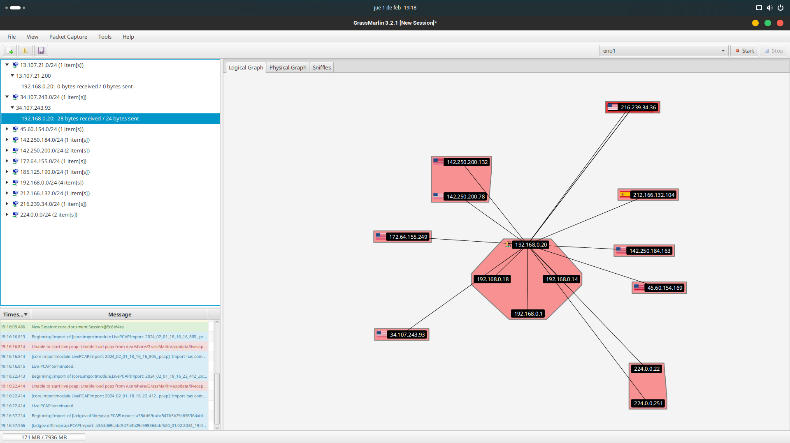

Network 3: Captura de tráfico de red.
Network 3 tiene como objetivo capturar el tráfico de una red y guardarlo en un archivo pcap. Luego se usa la herramienta Grassmarlin de la NSA para sacar la topología de la red. En este caso se ha analizado el tráfico de las peticiones http desde mi red local hacia la red de www.confianza23.es.
